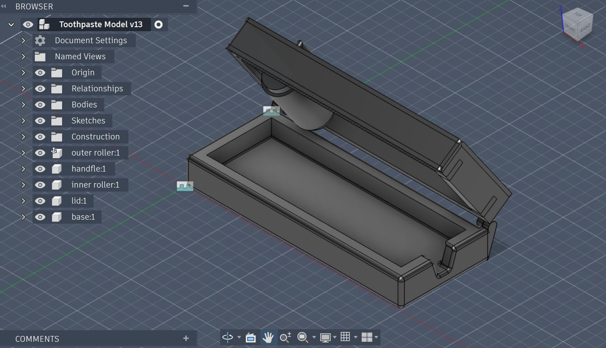
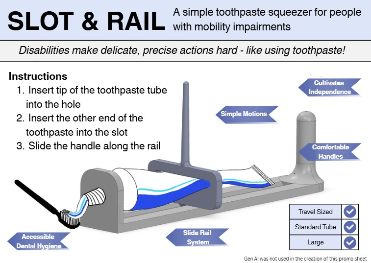

Adaptive Toothpaste Squeezer
Overview
The goal of this project was to design and model a functional Adaptive Toothpaste Squeezer for Ken Fraser,
an individual with limited hand dexterity.
What I Did
Peformed Stakeholder Consultation using an interview with Ken Fraser to generate target design specifications and
requirements for the final design to fit Ken Fraser's personal needs.
After making many initial models, this was my final personal design in Fusion 360.

The final design we went combined aspects from my design with parts of my teammates designs. Below is the
final poster for our design, which we believe best fits the needs of Ken Fraser.

Read our technical memorandum from our initial development of ideas to the final creation process!
What I Learned
I learned how to use Fusion 360 to build a functional model for an adaptive device and gained a much better
understanding of how much work goes into designing mechanical items.
I further enforced the idea that the "ideal design" is not the design that looks the best at the start, it is
always the one that, though odd, best suits the individual stakeholders needs. Adaptive devices should never be general,
they should focus on specifically solving the problems of a small set of (or even indivdual) stakeholders!
Skills & Technologies
CAD Modelling (Fusion 360) · Technical Memoranda · Elevator Pitches